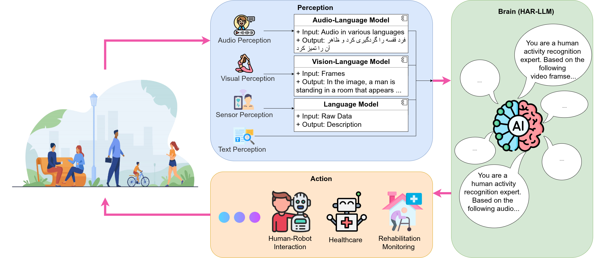
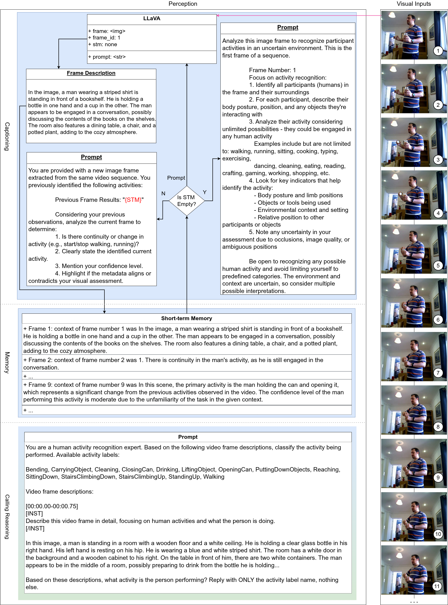
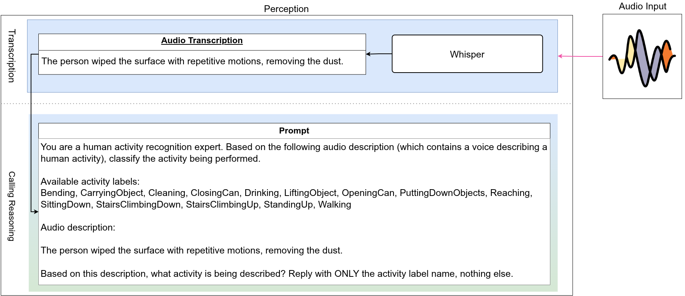
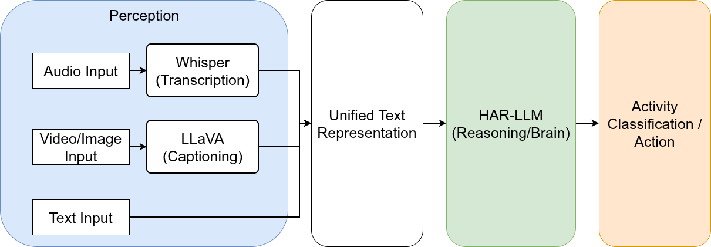
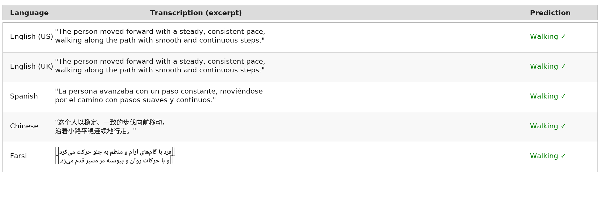

The Problem: Powerful AI That Nobody Can Run
Human activity recognition (HAR) is a cornerstone problem in computer vision, with applications ranging from elderly care monitoring and rehabilitation tracking to smart home automation and collaborative robotics. Decades of research have produced increasingly capable systems, from hand-crafted sensor features through deep learning architectures to modern transformer-based video classifiers. Yet a fundamental tension has persisted throughout this progression: the most powerful recognition systems demand computational resources that place them beyond the reach of most deployment scenarios.
The emergence of Large Language Models (LLMs) has introduced a paradigm shift in how we can approach activity recognition. Rather than treating HAR as a pattern-matching problem — mapping sensor signals directly to activity labels through opaque neural networks — LLMs enable a fundamentally different approach: generative, language-driven inference. An LLM-based system can interpret that "a person bending forward with hands extended toward the floor" describes a fundamentally different activity than "a person lifting a heavy box," even when both share similar postural characteristics. This interpretability is transformative: practitioners can inspect exactly what the system perceives, understand why it made a particular classification, and diagnose failure modes through natural language.
However, this promise comes at a steep cost. Running a 72-billion-parameter LLM for activity inference requires approximately 40 GB of GPU memory — four high-end A100 GPUs that few research labs, let alone care facilities or smart homes, can afford. The accessibility gap between what these models can do and where they can actually be deployed motivated the central research question behind HAR-Agent: Can we create HAR systems that harness LLM reasoning capabilities whilst remaining deployable on consumer-grade hardware?
The Solution: A Multimodal Agent Architecture
HAR-Agent answers this question through two interconnected innovations: a multimodal agent architecture that unifies visual, audio, and text perception through a common textual representation, and systematic knowledge distillation that compresses a 72-billion-parameter reasoning module into models small enough to run on a laptop GPU.
The architecture mirrors how humans understand activities — through what we see, what we hear, and what we read. Rather than building separate systems for each input modality, HAR-Agent converts all inputs to text and employs a single LLM to reason about them. A description of "a person walking with steady strides" receives the same reasoning treatment whether it came from a visual observation, a spoken description in any language, or a written activity log. This unification dramatically simplifies the system while enabling unprecedented flexibility.

Figure 1: The HAR-Agent Architecture. Three perception pathways — visual (LLaVA-NeXT), audio (Whisper), and direct text — convert multimodal inputs into a unified textual representation. A single instruction-tuned LLM reasoning module classifies the activity from this text, enabling modality-agnostic reasoning. This design means the entire reasoning component can be swapped, upgraded, or compressed independently of the perception modules.
Three Perception Pathways
Each pathway addresses a different deployment scenario and input modality, converting raw signals into the rich textual descriptions that the reasoning module needs.
Visual Perception: Seeing Activities Through Language
The visual pathway uses LLaVA-NeXT 7B, a state-of-the-art vision-language model, to process 17 uniformly sampled video frames. Rather than extracting abstract feature vectors, LLaVA generates natural language descriptions of each frame: "A person is standing in a kitchen, their right hand reaching toward a shelf above their head. Their body is slightly tilted backward to maintain balance." These descriptions capture poses, movements, objects, spatial relationships, and environmental context — the building blocks from which activity understanding emerges.
A critical innovation is the Short-Term Memory (STM) mechanism. Rather than processing each frame in isolation, STM maintains a sliding window of recent frame descriptions, enabling the system to reason about temporal progression: how a person's position changes, what sequence of actions composes a complex activity, and when transitions occur. To prevent redundancy from overwhelming the reasoning module, semantic deduplication using sentence embeddings (cosine similarity threshold 0.85–0.92) removes near-identical descriptions from consecutive static frames, compressing the representation whilst preserving discriminative information.

Figure 2: Visual Perception Pipeline. Video frames are uniformly sampled and processed by LLaVA-NeXT 7B to generate natural language scene descriptions. The Short-Term Memory mechanism maintains temporal context across frames, while semantic deduplication removes redundant descriptions. The result is a compact but information-rich textual summary that captures the temporal evolution of the observed activity.
Audio Perception: HAR in Any Language
The audio pathway addresses a fundamentally different use case: verbal activity descriptions. Using Whisper-medium (769M parameters), the system transcribes spoken descriptions in any supported language. When a user says "I am walking along the path with smooth and continuous steps" — whether in English, Chinese, Spanish, or Farsi — Whisper converts this to text that the reasoning module can classify. This enables multilingual HAR without requiring any language-specific training of the reasoning module, because the underlying activity semantics are language-invariant.
This pathway opens practical deployment scenarios that visual perception cannot address: rehabilitation monitoring through verbal self-report ("I'm doing my walking exercises"), accessibility interfaces for visually impaired users, voice-controlled smart home systems operating in multilingual households, and activity logging in settings where cameras raise privacy concerns.

Figure 3: Audio Perception Pipeline. Whisper-medium transcribes spoken activity descriptions across languages. The transcription feeds directly into the LLM reasoning module for classification, enabling multilingual HAR through verbal reporting without language-specific model training. Processing takes sub-second for all tested languages.
The Reasoning Module: Where Understanding Happens
All perception pathways converge at the reasoning module: an instruction-tuned LLM that receives unified text and generates activity classifications. By framing HAR as natural language reasoning, the model leverages its pre-trained understanding of human behaviour, body mechanics, and common-sense physics. The key insight is that a single powerful reasoning module can handle all input modalities equally — it does not need to know whether its input came from visual observation, spoken description, or written text.

Figure 4: Detailed Processing Pipeline. This diagram shows the complete data flow from multimodal inputs through perception modules to the reasoning module. Visual frames pass through LLaVA with STM and semantic deduplication; audio recordings pass through Whisper for transcription; text inputs feed directly. All pathways produce text that the instruction-tuned LLM classifies into one of 14 activity categories.
Knowledge Distillation: Compressing 72 Billion Parameters into 1.5 Billion
The reasoning module is the deployment bottleneck. A 72-billion-parameter teacher achieves 60.3% accuracy on 14-class activity recognition, but requires approximately 40 GB of GPU memory even with 4-bit quantisation. This makes it impractical for any setting outside a well-equipped research lab. Knowledge distillation addresses this by training smaller "student" models to replicate the teacher's behaviour, compressing the essential reasoning capabilities into models that fit on consumer hardware.
We systematically evaluated distillation across five student scales (1.5B, 3B, 7B, 14B, and 32B parameters) under two training paradigms, producing ten student models plus five zero-shot baselines — 17 configurations in total. The choice of training paradigm turns out to matter far more than we expected.
Instruction Tuning (IT)
Preserves the generative CausalLM architecture. The model generates activity labels as text in response to structured prompts, maintaining its native reasoning capabilities. Distillation operates in the shared vocabulary space common to all Qwen2.5 models — teacher and student "speak the same language," making knowledge transfer natural and effective.
Supervised Fine-Tuning (SFT)
Replaces the generative head with a 14-class classification layer. While conceptually simpler, this discards the generative paradigm and confines outputs to a task-specific representation space. Each model's randomly initialised classification head learns a different projection, creating representation-space mismatches that make knowledge transfer fundamentally harder.
Results: Six Findings That Reshape How We Think About LLM-Based HAR
Our evaluation spans 17 model configurations, two visual datasets (RHM-HAR and Toyota Smarthome), and one multilingual audio benchmark. The results tell a coherent story: the training paradigm matters more than model scale, smaller students can outperform larger ones, and accessible deployment need not sacrifice performance. We present each finding as it builds upon the previous, revealing how these insights connect.
Finding 1: General-Purpose LLMs Cannot Perform HAR Without Adaptation
Before examining which training approach works best, we must establish that training is even necessary. The zero-shot baselines provide the answer: five pre-trained Qwen2.5 models (1.5B to 32B), given the same activity classification prompt but no domain-specific training, achieve only 19–24% accuracy on 14-class recognition. This is well above the 7.1% chance level — confirming that LLMs possess some pre-trained knowledge about human activities — but far below what fine-tuned models achieve.
The IT-Teacher, by contrast, reaches 60.3% accuracy (macro-F1 = 0.621) after instruction tuning on the RHM-HAR dataset. This 36–41 percentage point gap quantifies the value of domain-specific adaptation and motivates the central question of our study: how should that adaptation be conducted, and how far can it be compressed?
| Model | Method | Params | Accuracy | 95% CI | F1 (Macro) | Cohen's κ | VRAM |
|---|---|---|---|---|---|---|---|
| IT-T-72B | IT | 72B | 60.3% | [57.7, 62.9] | 0.621 | 0.571 | ~40 GB |
| SFT-T-72B | SFT | 72B | 42.6% | [39.9, 45.3] | 0.401 | 0.382 | ~40 GB |
| IT Students | |||||||
| IT-S-32B | IT | 32B | 28.6% | [26.1, 31.0] | 0.243 | 0.234 | 17.9 GB |
| IT-S-14B | IT | 14B | 35.7% | [33.1, 38.2] | 0.336 | 0.303 | 7.8 GB |
| IT-S-7B | IT | 7B | 34.1% | [31.6, 36.8] | 0.322 | 0.287 | 3.9 GB |
| IT-S-3B | IT | 3B | 39.8% | [37.1, 42.4] | 0.388 | 0.353 | 1.7 GB |
| IT-S-1.5B | IT | 1.5B | 41.4% | [38.7, 44.0] | 0.405 | 0.371 | 0.8 GB |
| SFT Students (best shown) | |||||||
| SFT-S-7B | SFT | 7B | 16.6% | [14.7, 18.6] | 0.101 | 0.106 | 3.9 GB |
| Zero-Shot Baselines | |||||||
| ZS-32B | ZS | 32B | 24.0% | [21.6, 26.3] | 0.202 | 0.185 | 17.9 GB |
| ZS-1.5B | ZS | 1.5B | 19.0% | [16.8, 21.2] | 0.171 | 0.127 | 0.8 GB |
Table 1: Classification Performance on RHM-HAR (1,347 validation samples, 14 activity classes). Accuracy and macro-averaged F1-score with 95% bootstrap confidence intervals (n=10,000). The IT-S-1.5B student (highlighted) achieves the highest student accuracy whilst requiring only 0.8 GB VRAM.
Finding 2: Instruction Tuning Dominates Supervised Fine-Tuning at Every Scale
With domain adaptation established as essential, the next question is: which training paradigm should be used? The answer is unequivocal and consistent across all scales. Instruction Tuning outperforms Supervised Fine-Tuning by 17.5 to 27.9 percentage points at every model scale, with all differences confirmed as highly statistically significant by McNemar's test (all χ² > 100, all p < 0.0001).
What makes this finding particularly striking is that the gap amplifies through distillation. At the teacher level (72B), IT leads SFT by 17.7 percentage points. But at the 3B student level, this gap widens to 27.9 points. The SFT approach does not merely underperform — it actively degrades through compression. SFT students typically achieve accuracies of 8–17%, barely above the 7.1% chance level for 14 classes. This is not a marginal difference: IT produces useful classifiers where SFT produces near-random ones.
The mechanism behind this difference lies in representation space compatibility. IT models operate in the shared vocabulary space of the Qwen2.5 family — every model uses the same token set, making teacher output distributions directly informative for student learning. SFT models, by contrast, add randomly initialised classification heads that learn task-specific projections in incompatible representation spaces. When a 32B SFT student tries to learn from a 72B SFT teacher's classification logits, it is essentially trying to interpret signals from a foreign coordinate system.
| Scale | IT Accuracy | SFT Accuracy | Δ | χ² | p-value |
|---|---|---|---|---|---|
| 72B (Teachers) | 60.3% | 42.6% | 17.7 pp | — | — |
| 32B | 28.6% | 8.0% | 20.5 pp | 153.0 | < 0.0001 |
| 14B | 35.7% | 9.3% | 26.4 pp | 272.4 | < 0.0001 |
| 7B | 34.1% | 16.6% | 17.5 pp | 100.5 | < 0.0001 |
| 3B | 39.8% | 11.9% | 27.9 pp | 223.3 | < 0.0001 |
| 1.5B | 41.4% | 14.9% | 26.5 pp | 184.2 | < 0.0001 |
Table 2: IT vs. SFT Statistical Comparison. McNemar's test with continuity correction confirms highly significant differences at every student scale. The IT advantage ranges from 17.5 to 27.9 percentage points and amplifies through distillation.
Figure 5: IT vs. SFT Accuracy Across Model Scales. The consistent superiority of instruction tuning (blue) over supervised fine-tuning (orange) is evident at every scale from 1.5B to 72B parameters. The gap between the two paradigms widens at smaller scales, demonstrating that the training paradigm choice has an even greater impact on student models than on teachers.
Finding 3: The Inverse Scaling Phenomenon — Smaller Is Better
Perhaps our most surprising and consequential finding challenges a fundamental assumption in knowledge distillation: the smallest IT student (1.5B parameters) achieves the highest student accuracy (41.4%), outperforming all larger students including the 32B model (28.6%). This inverse scaling phenomenon — where reducing model size improves performance under distillation — contradicts the conventional expectation that larger students should better absorb teacher knowledge.
The pattern is systematic, not a statistical anomaly. Accuracy follows a clear inverse trajectory: 1.5B (41.4%) > 3B (39.8%) > 7B (34.1%) > 14B (35.7%) > 32B (28.6%). Meanwhile, zero-shot baselines follow the expected positive scaling: 32B (24.0%) > 14B (22.2%) > 7B (21.0%) > 3B (23.4%) > 1.5B (19.0%). The inversion occurs specifically through distillation, not in the underlying models themselves.
We hypothesise that larger students use their excess capacity to overfit to spurious patterns in the teacher's output distribution — learning not just the teacher's classification decisions but also its noise and biases. Smaller models, constrained by limited capacity, are forced to learn only the most essential decision boundaries. This interpretation aligns with recent findings by McKenzie et al. on inverse scaling in broader LLM tasks, but extends the phenomenon to the knowledge distillation setting for the first time.
Figure 6: Inverse Scaling in Knowledge Distillation. Accuracy plotted against model scale reveals three distinct patterns. IT students (blue) exhibit inverse scaling — the 1.5B model achieves the highest student accuracy, with performance degrading as models grow larger. SFT students (orange) remain near chance level regardless of scale. Zero-shot baselines (grey) follow conventional positive scaling. The 72B teachers (stars) represent the capability frontier. This divergent behaviour between IT and zero-shot baselines confirms the inverse scaling is specific to the distillation process.
Finding 4: Why IT Distillation Succeeds Where SFT Fails
To understand the mechanisms behind IT's superiority, we examine knowledge transfer fidelity directly using Teacher-Student Agreement (TSA) and Cohen's kappa (κ). These metrics quantify how faithfully each student replicates its teacher's predictions, independent of ground-truth accuracy — measuring the quality of the knowledge transfer itself.
The contrast is dramatic. IT-S-1.5B achieves TSA = 45.7% with κ = 0.417 (moderate agreement, well above chance) at 48x compression from the 72B teacher. The student reproduces nearly half of the teacher's exact predictions despite being 48 times smaller. In stark contrast, SFT-S-32B — the SFT student closest to its teacher in scale — achieves κ = -0.002: literally no agreement beyond chance. Despite being only 2.2x smaller than its teacher, the SFT student cannot replicate any meaningful pattern from the teacher's classification decisions.
The inverse scaling pattern extends to transfer metrics as well: the 1.5B and 3B IT students achieve the highest TSA values (45.7% and 45.4%), outperforming the 32B student (33.4%). This reinforces our hypothesis that smaller models are more receptive to structured classification knowledge during distillation.
| Student | TSA | Cohen's κ | Compression | CES |
|---|---|---|---|---|
| IT Teacher (72B) → IT Students | ||||
| IT-S-32B | 33.4% | 0.283 | 2.2x | 14.85 |
| IT-S-14B | 43.4% | 0.377 | 5.1x | 8.43 |
| IT-S-7B | 37.6% | 0.326 | 10.3x | 3.65 |
| IT-S-3B | 45.4% | 0.412 | 24.0x | 1.89 |
| IT-S-1.5B | 45.7% | 0.417 | 48.0x | 0.95 |
| SFT Teacher (72B) → SFT Students | ||||
| SFT-S-32B | 2.4% | -0.002 | 2.2x | 1.06 |
| SFT-S-7B | 7.8% | 0.042 | 10.3x | 0.76 |
| SFT-S-1.5B | 5.2% | 0.026 | 48.0x | 0.11 |
Table 3: Knowledge Distillation Analysis. TSA (Teacher-Student Agreement) and Cohen's κ measure how faithfully students replicate teacher predictions, independent of ground truth. IT students achieve moderate agreement (κ up to 0.417) at 48x compression, while SFT students show no agreement beyond chance (κ ≈ 0) even at 2.2x compression. CES = Compression Efficiency Score.
Figure 7: Knowledge Distillation Scaling. TSA and Compression Efficiency Score (CES) plotted against student model size for both IT (solid lines) and SFT (dashed lines). IT students consistently achieve higher agreement with their teacher at every scale. The inverse scaling pattern is visible in the TSA curve: the smallest IT students achieve the highest agreement, reinforcing the finding that smaller models are better receivers of distilled knowledge.
Finding 5: Cross-Lingual Activity Recognition at 89.2% Accuracy
Having established that IT distillation produces capable, compact reasoning modules, we demonstrate the architecture's multilingual flexibility. The Whisper → IT-S-1.5B pipeline was evaluated on a controlled benchmark of 250 TTS-generated audio samples spanning five activities in five language variants: Chinese (Mandarin), Spanish, Farsi (Persian), US English, and UK English.
The results demonstrate effective cross-lingual transfer without any language-specific training. Chinese achieves 98.0% accuracy with only one misclassification across 50 samples, despite using a completely different writing system and grammatical structure from the English-dominant training data. Spanish reaches 96.0%, and both English variants achieve 94.0% with matched error patterns, confirming robustness to accent variations.
The Farsi results (64.0%) reveal both promise and limitation. While substantially above the 20% chance level for five classes, the 30+ percentage point gap with other languages reflects reduced Whisper transcription quality for lower-resource languages and weaker LLM representations of Farsi activity semantics. This highlights an important direction for future work: extending robust multilingual HAR to lower-resource languages.
We emphasise that verbal activity descriptions provide direct semantic content — users explicitly describe their actions — making this evaluation closer to text classification than perceptual HAR. The 89.2% audio vs. 41.4% visual disparity reflects both this fundamental difference and the task complexity gap (5 vs. 14 classes). Nevertheless, the results validate that a single reasoning module trained on English activity descriptions can correctly classify spoken descriptions across typologically diverse languages, enabling deployment in multilingual environments.
| Language | Samples | Correct | Accuracy | F1 (Macro) | Avg Time |
|---|---|---|---|---|---|
| Chinese (Mandarin) | 50 | 49 | 98.0% | 0.980 | 0.51s |
| Spanish | 50 | 48 | 96.0% | 0.960 | 0.49s |
| English (US) | 50 | 47 | 94.0% | 0.940 | 0.43s |
| English (UK) | 50 | 47 | 94.0% | 0.940 | 0.43s |
| Farsi (Persian) | 50 | 32 | 64.0% | 0.628 | 0.75s |
| Overall | 250 | 223 | 89.2% | 0.890 | 0.56s |
Table 4: Multilingual Audio Evaluation. IT-S-1.5B classifying Whisper-medium transcriptions across 5 languages on 250 TTS samples. F1 is macro-averaged over the 5 ground-truth test classes. All languages process in sub-second time, enabling real-time interactive applications.

Figure 8: Cross-Lingual Semantic Understanding. Sample transcriptions and predictions for the Walking activity across all five languages. The system correctly classifies walking descriptions in Chinese, Spanish, English (both variants), and Farsi, demonstrating that activity semantics — steady pace, continuous steps, forward movement — transcend linguistic boundaries. The Whisper transcriptions preserve activity-relevant meaning regardless of source language.
Finding 6: Cross-Domain Generalisation to Real Homes
A critical test of any HAR system is whether it generalises beyond its training distribution. Models trained on laboratory data in controlled conditions may fail catastrophically when deployed in real homes with different camera angles, lighting conditions, subject demographics, and activity execution styles. To evaluate this, we tested our models on the Toyota Smarthome dataset — 186 samples from actual homes, with 8 activity classes mapped from our 14-class taxonomy.
Three important patterns emerge. First, IT models consistently outperform SFT in cross-domain settings, mirroring the in-domain trend and confirming that IT produces more transferable representations. Second, and more surprisingly, mid-scale IT students show smaller relative performance drops than the teacher: IT-S-14B drops only 22.3% and IT-S-3B drops 31.5%, compared to the teacher's 50.5% drop. This suggests that knowledge distillation may implicitly regularise students toward more domain-general representations — by compressing the teacher's knowledge, distillation discards environment-specific patterns and retains more universal activity features.
Third, per-class analysis reveals that activities with distinctive physical signatures transfer reliably across domains: StandingUp (F1=1.000), Walking (0.889), SittingDown (0.824), and Drinking (0.689) are recognised even in unfamiliar home environments. Fine-grained manipulation activities (LiftingObject: 0.000, Reaching: 0.000) fail completely, indicating that textual descriptions of these activities are too environment-dependent for cross-domain transfer.
| Model | RHM-HAR F1 | Toyota F1 | Toyota Acc. | Relative Drop |
|---|---|---|---|---|
| IT-T-72B | 0.621 | 0.308 | 33.9% | 50.5% |
| IT-S-14B | 0.336 | 0.261 | 30.8% | 22.3% |
| IT-S-3B | 0.388 | 0.266 | 28.4% | 31.5% |
| IT-S-1.5B | 0.405 | 0.221 | 25.3% | 45.4% |
| SFT-T-72B | 0.401 | 0.189 | 18.8% | 52.9% |
| ZS-32B | 0.202 | 0.166 | 23.1% | 18.0% |
Table 5: Cross-Domain Generalisation. Performance drop when transferring from RHM-HAR (laboratory) to Toyota Smarthome (real homes). Mid-scale IT students (highlighted) show the smallest relative drops, suggesting knowledge distillation implicitly regularises toward domain-general representations.
Understanding What the Models Get Right — and Wrong
The per-class analysis reveals a clear pattern: HAR-Agent excels at recognising activities with distinctive physical signatures that are well-captured by textual descriptions. StairsClimbingUp (F1=0.930), StandingUp (0.894), StairsClimbingDown (0.878), and SittingDown (0.877) all involve clear directional body movements that generate unambiguous textual descriptions. In contrast, fine-grained manipulation activities like Cleaning (0.289) and ClosingCan (0.312) share overlapping vocabulary about hand and arm movements, making them harder to distinguish through text alone.
The IT-S-1.5B student largely preserves the teacher's per-class profile at reduced magnitude: it maintains strong performance on distinctive activities (StandingUp: 0.833, StairsClimbingUp: 0.698) while showing the largest drops on subtle distinctions (Reaching: 0.052). This suggests that knowledge distillation effectively transfers coarse activity boundaries but struggles with inter-class distinctions that depend on fine textual nuance.
Figure 9: Per-Class F1 Radar Chart. Comparison of class-specific performance for IT-T-72B (teacher, outer polygon), IT-S-1.5B (best student, middle), and SFT-T-72B (inner) across all 14 activity classes. The IT teacher achieves strong performance on physically distinctive activities (StairsClimbingUp, StandingUp, SittingDown) while struggling with fine-grained manipulation (Cleaning, ClosingCan). The student preserves the teacher's profile shape at reduced magnitude, confirming effective knowledge transfer of the activity discrimination hierarchy.
Figure 10: Normalised Confusion Matrices. Four models compared: (a) IT-T-72B shows strong diagonal dominance with residual confusion between semantically similar activities (SittingDown/StandingUp, Bending/Reaching); (b) IT-S-1.5B preserves the teacher's primary classification patterns at reduced confidence; (c) SFT-T-72B shows a more diffuse prediction distribution; (d) ZS-7B baseline exhibits heavy bias toward a few dominant classes. These matrices reveal that IT preserves the teacher's learned activity discrimination structure through distillation.
Prediction Reliability: Stable Despite Stochastic Decoding
A natural concern with generative LLMs is whether stochastic decoding introduces meaningful variance. We conducted N=5 independent runs with stochastic sampling (T=0.3, top_p=0.95) for each model. IT models demonstrate self-agreement ≥ 89.4% across runs, meaning the vast majority of predictions are deterministic despite sampling randomness. Majority-vote ensembling consistently improves accuracy (IT-S-1.5B: 41.4% MV vs. 40.8% mean), suggesting that the small stochastic variance carries informative signal.
The cross-model agreement analysis reveals a striking block-diagonal structure: IT models agree strongly with each other and their teacher, forming a coherent prediction cluster. SFT models show near-random agreement with all other models, including their own teacher — a quantitative confirmation that SFT distillation fails to transfer coherent classification patterns.
Figure 11: Prediction Self-Agreement. Self-agreement (fraction of samples receiving identical predictions across N=5 independent runs) and pairwise agreement for all 17 models. IT models show meaningful self-agreement (89–93%) with informative stochastic variance. SFT and zero-shot models show higher but trivial self-agreement (95–97%), reflecting consistent incorrect predictions rather than reliable accuracy.
Figure 12: Cross-Model Agreement Heatmap. Pairwise agreement rates between all 17 model pairs. The block-diagonal structure is immediately visible: IT models (top-left) agree strongly with each other and their teacher, forming a coherent cluster. SFT models (middle block) show low agreement with everything, including their own teacher. Zero-shot baselines (bottom-right) form a separate cluster. This visualisation confirms that IT produces models with coherent, aligned decision boundaries, while SFT produces divergent classifiers.
Confidence Calibration and Hyperparameter Robustness
Beyond accuracy, we examine whether models' confidence scores are trustworthy. The IT-T-72B teacher shows reasonable calibration with slight overconfidence on mid-range predictions. IT students retain similar calibration patterns at lower overall confidence, suggesting that knowledge distillation preserves the teacher's relative confidence structure. SFT models show poor calibration, consistent with their degraded performance.
The KD hyperparameter ablation reveals that IT distillation is remarkably robust: the loss surface is smooth across temperature T (1–5) and interpolation weight α (0.3–0.9), meaning practitioners can achieve good results without extensive tuning. In contrast, SFT distillation loss increases with temperature — the opposite of IT — confirming that these two paradigms respond to hyperparameters in fundamentally different ways.
Figure 13: Confidence Calibration Analysis. Reliability diagrams showing predicted confidence vs. observed accuracy. Well-calibrated models lie close to the diagonal. The IT teacher shows reasonable calibration; IT students retain similar patterns at lower confidence; SFT models show poor calibration across all confidence levels.
Figure 14: Zero-Shot vs. Fine-Tuned Performance. Direct comparison showing the effect of domain adaptation at each scale. IT fine-tuning (blue) produces substantial improvements over zero-shot (grey) at every scale, with the gap widening at smaller scales. SFT fine-tuning (orange) often degrades performance below zero-shot levels, confirming that classification-head distillation can be actively harmful.
Figure 15: KD Hyperparameter Sensitivity. Distillation loss surface across temperature T and interpolation weight α. For IT, moderate temperatures (T≈2–3) and balanced weights (α≈0.5–0.7) perform best, with a smooth surface indicating robustness. For SFT, loss increases with temperature — the opposite trend — confirming fundamental paradigmatic differences in how the two approaches respond to distribution softening.
From Research to Practice: Deployment on Consumer Hardware
The inverse scaling finding crystallises into a compelling deployment story. The IT-S-1.5B model — requiring only 0.8 GB VRAM — outperforms all larger students while being deployable on virtually any GPU-equipped hardware. The complete multilingual audio pipeline (Whisper + IT-S-1.5B) requires approximately 6 GB, fitting comfortably on a consumer RTX 3060. The visual pipeline (LLaVA + IT-S-1.5B) needs approximately 9 GB. Text-only operation runs under 1 GB, enabling deployment even on integrated graphics.
This accessibility has implications beyond hardware requirements. It enables iteration and experimentation that expensive infrastructure prohibits. It enables deployment in care facilities, homes, and developing regions where dedicated AI hardware is impractical. It enables privacy through local processing, performing activity recognition without streaming data to cloud services. And the multilingual capability ensures these benefits extend to non-English speakers.
The full training pipeline — two 72B teachers and ten students across five scales — required approximately one month on a multi-GPU cluster (NVIDIA A100 80 GB). This is a one-time investment: once distillation is complete, the resulting models can be deployed indefinitely on consumer hardware without further cluster access.
| Configuration | VRAM | Latency | Hardware | Use Case |
|---|---|---|---|---|
| IT-T-72B + LLaVA | 48 GB | ~14s | 4×A100 | Research only |
| IT-S-1.5B + LLaVA | 9 GB | ~12s | RTX 3060 12GB | Visual deployment |
| IT-S-1.5B + Whisper | 6 GB | ~0.6s | RTX 3060 | Multilingual audio |
| IT-S-1.5B only | 0.8 GB | ~0.2s | Any GPU | Text-only |
Table 6: Deployment Configurations. The audio pathway with IT-S-1.5B (highlighted) provides the best trade-off: 89.2% multilingual accuracy with sub-second latency on consumer hardware. The inverse scaling phenomenon means the cheapest configuration is also the most capable.
Figure 16: Pareto Frontier of Model Size vs. Accuracy. Each point represents one of 17 model configurations. IT-S-1.5B (bottom-right of the IT cluster) achieves the best student trade-off: 41.4% accuracy at only 0.8 GB VRAM and 1.5B parameters. The inverse scaling phenomenon means that the Pareto-optimal point in the accessible region is also the best-performing student overall — practitioners need not sacrifice performance for deployability.
The 14 Activity Classes
The RHM-HAR dataset comprises 6,701 robot-mounted video clips across 14 daily living activities, captured from multiple camera viewpoints in laboratory and simulated home environments. The dataset was split 80/20 into 5,354 training and 1,347 validation samples using stratified sampling by class label to ensure balanced representation across all activities.
Postural Activities
Bending, SittingDown, StandingUp, Reaching — involving changes in body posture and position. These activities are generally well-captured by textual descriptions of body orientation and joint positions.
Locomotion
Walking, StairsClimbingUp, StairsClimbingDown — involving sustained movement through space. These produce highly distinctive textual descriptions and achieve the highest recognition accuracy.
Object Manipulation
CarryingObject, LiftingObject, PuttingDownObjects — involving interaction with physical objects. Recognition depends on the VLM's ability to describe object-hand relationships in sufficient detail.
Fine-Grained Activities
Cleaning, Drinking, OpeningCan, ClosingCan — involving subtle hand and arm movements. These are the most challenging for text-mediated recognition, as descriptions often share overlapping vocabulary.
Open Science & Reproducibility
We are committed to fully reproducible research. All 12 trained LoRA adapter checkpoints, comprehensive evaluation results across all 17 configurations, the multilingual audio benchmark, and the complete codebase (perception pipelines, training scripts, evaluation tools, and deployment examples) are prepared for public release. The trained models are hosted on HuggingFace, and the codebase will be released under an open-source licence upon acceptance of the manuscript.